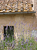

Adventures in Tuscany
This is a short chronicle of my visit to Italy. Click on the thumbnails to see a larger view of each photograph. Enjoy!
Pozzarello
 The house we stayed in was called Pozzarello and it was built around the year 1200 as the home of the gardner who tended the grounds of the adjacent castle. The thick walls kept us nice and cool inside, despite the blistering mid-day heat. This is the view from our bedroom window.
The house we stayed in was called Pozzarello and it was built around the year 1200 as the home of the gardner who tended the grounds of the adjacent castle. The thick walls kept us nice and cool inside, despite the blistering mid-day heat. This is the view from our bedroom window.
The Tuscan Countryside
 This is the scene on the way to Montalcino (all roads lead to Montalcino!). It looks a lot like the scene on the way to Sienna, and the scene on the way to the grocery store. We were surrounded by beautiful countryside for most of our travels.
This is the scene on the way to Montalcino (all roads lead to Montalcino!). It looks a lot like the scene on the way to Sienna, and the scene on the way to the grocery store. We were surrounded by beautiful countryside for most of our travels.
Sienna
 The closest city to our villa was Sienna, about 30 minutes away. We spent many days exploring the steep and crooked streets, sampling the local cuisine at outdoor restaurants, and stopping in the dark and echoey Duomo to escape the sun.
The closest city to our villa was Sienna, about 30 minutes away. We spent many days exploring the steep and crooked streets, sampling the local cuisine at outdoor restaurants, and stopping in the dark and echoey Duomo to escape the sun.
The Sweets
 The sweets of Sienna, an historic and much-loved destination that’s widely known for the sumptuous sweets that add to the charm and lure of Tuscany.
The sweets of Sienna, an historic and much-loved destination that’s widely known for the sumptuous sweets that add to the charm and lure of Tuscany.
The Cathedral
 The cathedral in Sienna is a marvel of architecture and art. The floors are covered in intricate mosaics, and the walls are painted with scenes from the Bible. The cathedral is a must-see for anyone visiting the area.
The cathedral in Sienna is a marvel of architecture and art. The floors are covered in intricate mosaics, and the walls are painted with scenes from the Bible. The cathedral is a must-see for anyone visiting the area.
The Lavender
The lavender in Sienna is simply a beautiful flower that happens to able to find in across Sienna. It's one of the prettiest flower that you can simply find it in Sienna.